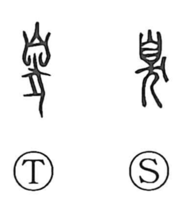

臭

Uncategorized
Kun: kusai, niou, nioi | On: shuu
smell ・ odor ・ to stink ・ bad smell
Explanation
In its earliest form, 臭 is a compound of 自, the front view of a nose, and 犬, the dog. Because the dog epitomizes keen scent, the graph pictures a dog’s nose and naturally came to mean smell—both the act of smelling and an odor itself, especially a foul one. Later standard shapes often write the lower part like 大, but the ancient writing with 犬 makes the original idea—smell perceived through a dog’s nose—clear.